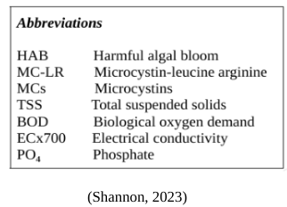
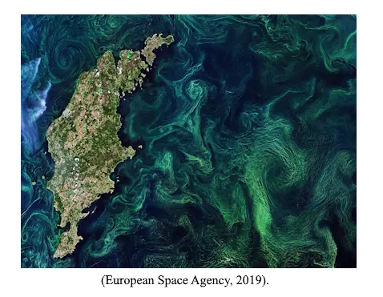
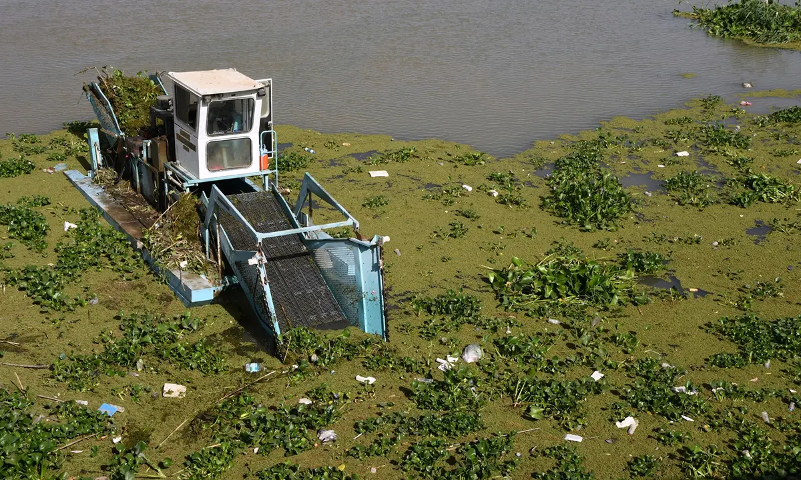
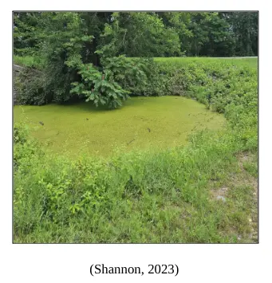
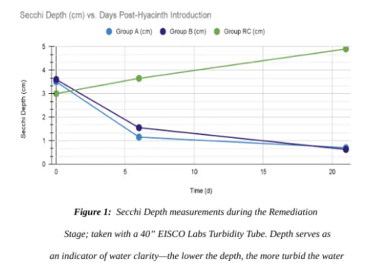
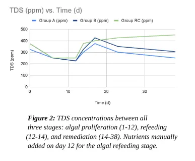
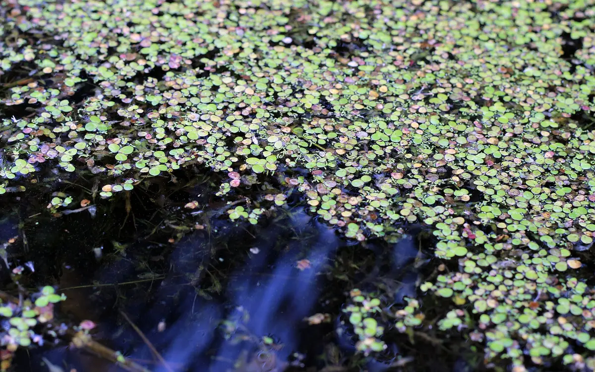
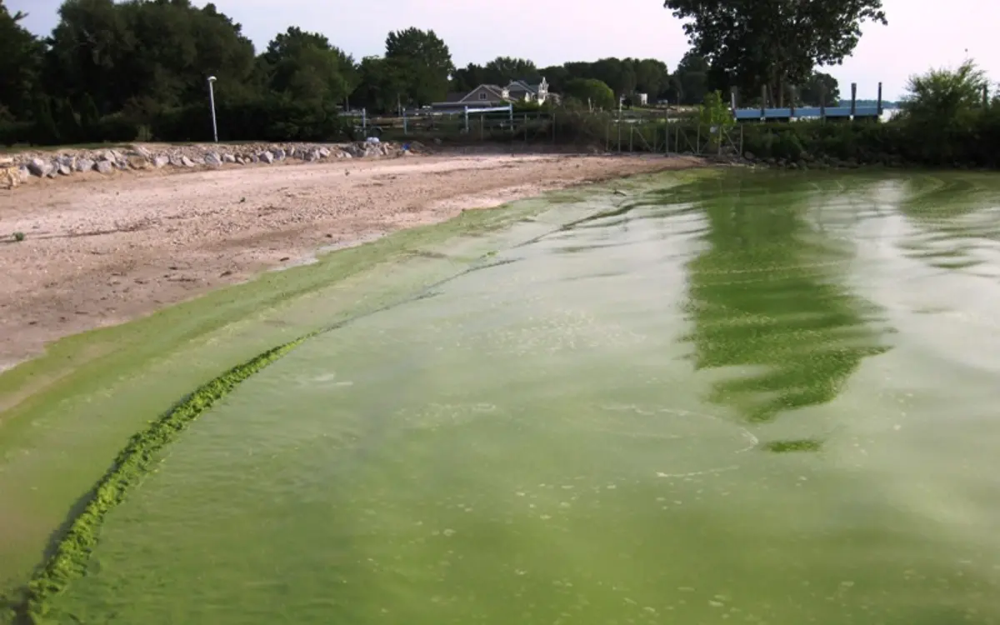

Full research report · University at Albany
Rhizofiltration of an Induced Microcystis Bloom Using Water Hyacinth
A constructed-wetland experiment testing whether water hyacinth could remove bloom-supporting nutrients from an induced Microcystis system.

Abstract
Harmful algal blooms (HABs) represent a significant, pervasive threat to global aquatic ecosystems, impacting ecology, economies, and overall human health. Hepatotoxic blooms in particular, such as Microcystis blooms, are known to produce a classification of cyanotoxins known as the Microcystins (MCs), of which there are over 270 recognized variants (Yang et al., 2020). MC-LR, one of the most common and most deadly, is a known liver tumor enhancer. This study investigates the potential of the common water hyacinth (Eichhornia crassipes) in mitigating HABs through rhizofiltration, a phytoremediation process involving the uptake of nutrients, such as phosphates, through the macrophyte's root system. The presence of water hyacinth, as supported by the data, influences cyanobacterial growth, indicated by fluctuations in turbidity. Secchi depth measurements unexpectedly showed a decrease in water clarity within groups with water hyacinth compared to the control group; however, remediation was observed as the algal scum visibly decreased and PO4 / TDS levels decreased.
Despite supporting the hypothesis in part, the study acknowledges the complexity of the constructed system. Factors such as water hyacinth growth and shedding, potential shading effects, dissolved oxygen levels, and the settling of algae should be considered in future investigations. The study emphasizes the need for a balanced approach to all future water hyacinth applications, ensuring its effective utilization while preventing issues such as hyacinth matting.
Introduction
Harmful algal blooms (HABs) are pervasive environmental phenomena which pose a considerable threat to both coastal and freshwater ecosystems worldwide. These blooms are generally characterized by an explosive growth of various forms of potentially toxic algae, composed of certain phytoplankton species including cyanobacteria, diatoms, and dinoflagellates (Centers for Disease Control and Prevention, 2022). Algal blooms form as a result of a process known as eutrophication, which occurs when an excessive amount of various nutrients such as nitrogen and phosphorus build up within a body of water. This overabundance generally arises due to agricultural runoff, with applied fertilizers and animal manure on farms contributing significantly (Hodgkin and Hamilton, 1993). Eutrophication generally leads to a proliferation of algae suspended within the water column, but in some cases, it can also cause a proliferation of algae that grows attached to the benthic zone, the lowest ecological region of a body of water.
HABs can have severe ecological, economic, and human health impacts. They are known to form dense surface scums through which the sun cannot penetrate, which often leads to the death of neighboring aquatic plants as they can no longer photosynthesize. An even greater problem can occur when the algae die, however, as the phytoplankton making up the bloom sink to the bottom of the affected water body and are decomposed by aerobic bacteria. During this process, the bacteria consume oxygen, leading to an overall reduction in dissolved oxygen levels. This can create both hypoxic and anoxic conditions. This has been shown to contribute to fish kills (Paerl and Fulton, 2006). This can ultimately reduce biodiversity, change the population dynamics of affected species, and disrupt commercial and recreational fishing industries, thus affecting local economies drastically (Turley et al., 2022).
Additionally, as cell death and lysis occur, large quantities of toxins produced by these HABs can be released into the water (United States Environmental Protection Agency, 2022). In the case of harmful cyanobacterial blooms, which are the most common freshwater HAB, these toxins are known as cyanotoxins. Algal blooms are actively increasing in prevalence throughout virtually the entirety of the world due to climate change, by way of the exacerbation of their many contributing factors, and as such, the prevalence of cyanotoxins are, as well (Kaloudis et al., 2022; Alikas et al., 2010; Kahru and Elmgren, 2014). Among the many potentially bioactive metabolites produced by cyanobacteria, there are three primary groups of cyanotoxins, recognized by way of their mechanisms of action: hepatotoxins, which affect the liver; neurotoxins, which affect your nervous system; and dermatotoxins, which are skin irritants.
Cyanotoxins can potentiate a range of symptoms within both humans and animals alike, including skin irritation, allergies, and gastrointestinal problems, as well as liver and neurological damage in certain severe cases (Drobac et al., 2013). Some cyanotoxins are also considered carcinogenic; they can cause oxidative DNA damage and interfere with DNA damage repair pathways (Žegura et al., 2011). One of the most hepatotoxic cyanotoxins commonly observed within natural environments is microcystin-LR (MC-LR). MC-LR is one of the most toxic of the group of cyanotoxins known as microcystins, of which there are over 250 individual chemicals documented (Wang et al., 2010; Cunningham et al., 2022). MC-LR is a known liver tumor promoter (Falconer and Humpage, 2005), and it has also been shown to potentiate excitotoxicity, which occurs when levels of certain otherwise necessary neurotransmitters become pathologically high.
Excitotoxicity can lead to loss of neuronal function and even cell death, in severe cases (Neilan et al., 2017; Hwang et al., 2021). Moreover, Zhang et al. showed that some microcystins (MCs) can interfere with hormonal function, as well as the development of producing/responding cells, disrupting normal functioning of the endocrine system (Zhang et al., 2022). Current treatment strategies for HABs include physical, chemical, and biological treatments. Physical treatments involve mechanical removal of algal scums and can be beneficial in the short-term for removing the algal biomass. However, the physical removal of HABs can be expensive, labor intensive, and can be difficult in certain contexts. Chemical treatments—such as copper sulfate—are effective at killing algal cells, but they may also be toxic to fish and other aquatic life (Flemming and Trevors, 1989).
Biological treatments generally involve introducing predators to the environment which can consume the algae; however, through some biological treatment methods, it may take years for significant effects to be observed. Phytoremediation is a sustainable and cost-effective approach to remediate contaminated areas by using plants and their associated microorganisms to either extract, degrade, or contain various pollutants. This method has gained significant attention in recent years as an alternative to traditional physical and chemical methods due to its potential to remove a wide range of contaminants, including heavy metals, organic pollutants, and radioactive materials with little drawback (Danh et al., 2012; Meagher, 2020). Phytoremediation consists of five primary methods: phytostabilization, phytodegradation, rhizofiltration, phytoextraction, and phytovolatilization. In particular, rhizofiltration uses the root systems of certain plants to remove pollutants from water (Nedjimi, 2021). The common water hyacinth (Eichhornia crassipes) is a free-floating aquatic plant and recognized phytoremediative agent.
It is best known for its ability to absorb and accumulate heavy metals, nutrients, and other pollutants within its biomass through its root system by rhizofiltrative means (Rezania et al., 2015; Reddy and Tucker, 1983). Because of its ability to absorb nutrients (e.g., nitrates and phosphates) from polluted, eutrophic bodies of water, it is also potentially able to reduce the algae present therein (Auchterlonie et al., 2021; Kim, 2020). Hyacinths can reduce both the overall count of total suspended solids (TSS) as well as the biological oxygen demand (BOD) within water (Kim et al., 2004). Suspended solids are classified as any waterborne particle that can be trapped in a filter, including silt, decaying organic matter, sewage, and industrial wastes. A high TSS level in a body of water often implicates higher concentrations of nutrients, pesticides, and/or bacteria, all of which can be harmful.
The BOD represents the amount of dissolved oxygen consumed by aerobic bacteria as they decompose organic material. A high BOD can indicate microbial pollution, thus signifying lower water quality.
Despite these advantages, there are drawbacks to use of water hyacinth for phytoremediation. Water hyacinth grows rather quickly, and has relatively few natural predators, so it can also proliferate under eutrophic conditions and form a “water hyacinth mat”, which can result in hypoxic environments similar to HABs (Hidayati et al., 2018). Under favorable conditions, the edge of a water hyacinth mat can grow up to 60 meters per month, and its seeds can remain viable for up to 20 years on the bottom of an affected water source (Imaoka and Teranishi, 1988). Despite its rapid growth rate, the common water hyacinth maintains significant potential for use as an effective phytoremediator, as there are several methods whereby water hyacinth plants can be controlled, killed, or otherwise removed from a body of water. However, not all of them are as effective as the others.
Generally, there are three classifications of these techniques when it comes to hyacinth control: chemical, biological, and mechanical methods. In chemical control, herbicides are used to kill off water hyacinth. This does have a major downside, however, as these herbicides have been known to cause pollution and unintended harm to aquatic life (Chu et al., 2006; Tarazona et al., 2017). Mechanical control entails physically removing plants from the water, but this is often ineffective, as pieces of plant may be left behind, which can then potentially regrow. Biological control entails releasing a natural predator of the hyacinth, such as certain species of weevils, but significant effects can take years to be observed through this process, and as such, it may not be as effective. Phytoremediation counteracts this prolonged period of no observed effects, as it serves as a more immediate fix.
The aim of this study is to investigate the phytoremediation potential of the common water hyacinth in a wetland model. It intends to assess the macrophyte’s effectiveness on developing algal blooms, potentially serving as a baseline study for further referral.
It is likely that if the water hyacinth is applied to HAB-inflicted waters when blooms themselves are in development, the eutrophication process will be mitigated, to the extent that algal growth will be significantly reduced, or possibly stopped altogether; this may be signified by an observable decrease in water turbidity, or an increase in Secchi disk depth.
Methodology
Models were developed with available materials. Clear 71 oz. glass containers obtained from Marbelous Decor were utilized for harboring all algae; prior to use, the containers were initially washed completely with soap and water, and subsequently rinsed thoroughly with 91% isopropyl alcohol. They were allowed to air dry and left to sit until needed. They were each equipped with an approximately two-centimeter base of soil sourced from a duckweed bloom-afflicted pond located along the Empire State Trail in Fort Edward, New York (43.292768, -73.569483). It was not confirmed that absolutely no algae was present within this particular pond; however, based on observation, there appeared to be none, so it was believed that different algal strains would not compete over nutrients. The parcel of land wherein the pond is located is managed by the New York State Canal Corporation, and appropriate sampling permissions were obtained. A Limited Release of Liability form was also signed.
Signs of hypoxia were observed as a result of the duckweed’s presence. The blooms located elsewhere along this trail were identified as potential HABs according to Utah State University’s Simplified HAB Field Identification Instructions (Utah State University, 2021). All suspicious bodies of water believed to be inflicted have since been reported to the NYSDEC through their Suspicious Algal Bloom Report Form. The strain of algae used, Microcystis aeruginosa, was purchased online from Carolina Biological Supply Company. The referenced cyanobacterial culture requires a low light level, and it maintains an optimum growth temperature of approximately 22° C. Taking the water hyacinth’s optimum growth temperature range into consideration, an ideal temperature of approximately 24°C was desired. A VIVOSUN Grow Tent (48" x 48" x 80") was utilized to ensure this temperature and to reduce unwanted fluctuations in other various environmental factors, such as light intensity, humidity, vapor-pressure differences, and more.
The fertilizer used, Miracle-Gro All Purpose Water-Soluble Plant Food, maintains a composition of 12-4-8; thus, as a fertilizer, it provides 12% Urea Nitrogen (N), 4% Phosphorus (P), and 8% Potassium, as well as > 1% Chelated Iron, Chelated Manganese, and Chelated Zinc. M. aeruginosa maintains an N:P ratio of ≤ 44:1 for Microcystis abundance as supported by Smith (1983). 1.5 tbsp of fertilizer was applied for every gallon of water used, and 10 fl. oz. nutrient solutions were prepared for the two feeding stages. The phosphates and nitrates provided through the fertilizer, alongside the various micronutrients (i.e. zinc, calcium, iron, magnesium, etc.) potentially found within the aforementioned soil sample, provided an adequate food source for the eventual growth of the algae. At the start of the experiment, phosphate concentrations within each container were kept relatively the same, which was confirmed by the utilization of colorimetric test strips ordered from Hach.
These same strips were then used regularly as the experiment began, and these concentrations were monitored and used for a baseline understanding of the rate at which the algae itself may uptake nutrients. They were then used when the water hyacinth was applied during the remediation stage, and the respective nutrient uptakes observed were compared. A Bluelab Truncheon Nutrient Meter was utilized for measuring the Total Dissolved Solids (TDS) and the Electrical Conductivity (ECx700) of the models. These measurements are alternatives of one another, just on different scales; thus, it was expected that they would maintain relatively similar trends. However, measurements were recorded on both scales regardless, as a failsafe measure. In lieu of spectrophotometry, a 40” EISCO Labs Turbidity Tube, equipped with a Secchi Disk, was utilized to measure the turbidity, or water clarity, of constructed models.
As the algae spends a portion of its natural lifespan suspended within the water column, thus obscuring the water, substantial fluctuations in overall water turbidity could be utilized as a potential indicator of cyanobacterial growth (USU, 2016). When interpreted, a higher Secchi depth indicates a lower turbidity, and a potential increase in algal growth, and a lower Secchi depth indicates a higher turbidity, or a potential decrease. The common water hyacinth (Eichhornia crassipes) was purchased live, sourced from Aquatics Plants Nursery, and one plant was added to each container. Although E. crassipes is not currently regulated by the NYSDEC, it is considered an invasive species in New York State (WNY PRISM, 2023), and as such, the plants were all handled with care. Moreover, NYSDEC’s Josh Thiel of the Invasive Species Coordination Section was contacted with regard to efficient hyacinth disposal, ensuring that there was no release to the environment.
Ultimately, plants were all desiccated prior to their discarding. This study contained a Remediation Comparison (RC) group and a Phytoremediation-A (A) group. RC experimentation was conducted with one replicate, whereas Group A experimentation was conducted in triplicate.
The RC group consisted of two algal blooms, allowed to progress normally with no water hyacinth present. TDS and PO4 contents were both recorded regularly and graphed for further interpretation. Fluctuations in Secchi depth were recorded for the purpose of observing changing turbidity levels, and when constructing the models and introducing the algal specimen, pH was monitored and adjusted if necessary. Group A was the developed group –– four algal blooms were simulated, and once cyanobacterial growth was believed to be peaking, the hyacinth was introduced. The hyacinth’s effect on algal growth was then observed, with TDS, PO4, and Secchi depth all being recorded. These results would be helpful in the establishment of related application strategies, which can have the potential to enhance the effectiveness of the common water hyacinth as a control measure for HABs.
Results
The introduction of the water hyacinth did appear to have an influence on cyanobacterial growth, which was observable through notable fluctuations in turbidity (Fig. 1). As shown within Figure 1, Secchi depth, which serves as an indicator of overall water clarity, decreased in Groups A and B at an approximate rate of 0.2 cm per day. In contrast, the RC group exhibited an increase in Secchi depth, with a daily increment of around 0.09 cm. These findings suggest that the presence of E. crassipes in Groups A and B may have actually contributed to reducing the water clarity compared to the control group, consisting solely of M. aeruginosa, wherein the water clarity increased. This study additionally examined the trends of phosphate (PO₄) depletion within the experimental system. E. crassipes demonstrated an average daily uptake rate of approximately 2.9 ppm per day.
In contrast, M. aeruginosa itself displayed a phosphate depletion rate of 1.9 ppm per day. This shows a notable 1.5-fold increase in the rate of PO₄ depletion within the experimental system. These observations indicate that the introduction of E. crassipes can significantly enhance the removal of phosphate from an aqueous environment, exhibiting a P-value of approximately 0.01 for the Remediation Stage as determined by a two-tailed T-Test. The TDS concentration was also observed throughout the experiment. Groups A and B maintained an average daily rate decreasing by 9.1 ppm per day, whereas group RC, without E. crassipes being present, maintained an average depletion rate of approximately 7.25 ppm per day, showing a notable 1.25-fold increase in decreasing values. Electrical conductivity (ECx700) was additionally measured, as it is considered an alternative of the TDS measurement, and as expected, they both maintained relatively similar trendlines.
Conclusion
These results underscore the sheer complexity of the experimental system constructed, and analysis shows that there are many factors which may potentially influence some of the variables involved, primarily turbidity. Thus, although this study’s hypothesis was partially supported, it is important that any follow-up study considers the following: 1.) measuring water hyacinth growth and assessing potential matting in full-scale applications, 2.) determining dissolved oxygen contents prior to the start of the experiment, and 3.) ensuring cyanobacterial growth via spectrophotometry. Water hyacinth growth was not measured in this study, as the plants were ultimately used to establish a baseline with regard to the macrophyte’s nutrient uptake abilities. Assessing the macrophyte’s growth and potential for matting would be greatly beneficial for future studies. Moreover, measuring dissolved oxygen as the experiment continues would provide beneficial insights regarding the potential eutrophication of the water, and spectrophotometry would allow for the creation of an OD730 vs.
Time plot, effectively measuring cyanobacterial growth, leaving no need for a turbidity measurement. Although there have been several instances of real-world water hyacinth applications for phytoremediation (Sarkar et al., 2017; Haris et al., 2018), the phenomenon of water hyacinth matting is a persisting problem within associated remediation processes. Thus, it has been previously suggested in the literature that before the common water hyacinth can effectively be employed on a large scale within a natural environment, a system should be developed which allows the hyacinth adequate time to grow and uptake nutrients while anticipating the need for future water hyacinth control prior to any negative effects, such as hyacinth shading, being observed.
Figures and research visuals
Every non-decorative visual from the source paper is reproduced below, including the study’s reference images, field photograph, and result charts.






References
1. Alikas, K., Kangro, K., & Reinart, A. (2010). Detecting cyanobacterial blooms in large north European lakes using the maximum chlorophyll index. OCEANOLOGIA, 52(2), 237-257. https://doi.org/10.5697/oc.52-2.237
2. Anjum, N. A., Pereira, M. E., Ahmad, I., Duarte, A. C., Umar, S., & Khan, N. A. (2012). Phytoremediation of soils contaminated by heavy metals, metalloids, and radioactive materials using vetiver grass, Chrysopogon zizanioides. Phytotechnologies, 280-307. https://doi.org/10.1201/b12954-17
3. Auchterlonie, J., Eden, C., & Sheridan, C. (2021). The phytoremediation potential of water Hyacinth: A case study from Hartbeespoort dam, South Africa. South African Journal of Chemical Engineering, 37, 31-36. https://doi.org/10.1016/j.sajce.2021.03.002
4. CDC. (2022, October 4). Causes and ecosystem impacts. Centers for Disease Control and Prevention. https://www.cdc.gov/habs/environment.html
5. Chu, J., Ding, Y., & Zhuang, Q. (2006). Invasion and control of water Hyacinth (Eichhornia crassipes) in China. Journal of Zhejiang University SCIENCE B, 7(8), 623-626. https://doi.org/10.1631/jzus.2006.b0623
6. Cunningham, B. R., Wharton, R. E., Lee, C., Mojica, M. A., Krajewski, L. C., Gordon, S. C., Schaefer, A. M., Johnson, R. C., & Hamelin, E. I. (2022). Measurement of Microcystin activity in human plasma using Immunocapture and protein Phosphatase inhibition assay. Toxins, 14(11), 813. https://doi.org/10.3390/toxins14110813
7. Drobac, D., Tokodi, N., Simeunović, J., Baltić, V., Stanić, D., & Svirčev, Z. (2013). Human exposure to Cyanotoxins and their effects on health. Archives of Industrial Hygiene and Toxicology, 64(2), 305-316. https://doi.org/10.2478/10004-1254-64-2013-2320
8. D‘Mello, F., Braidy, N., Marçal, H., Guillemin, G., Rossi, F., Chinian, M., Laurent, D., Teo, C., & Neilan, B. A. (2016). Cytotoxic effects of environmental toxins on human glial cells. Neurotoxicity Research, 31(2), 245-258. https://doi.org/10.1007/s12640-016-9678-5
9. Eke, J., Wagh, P., & Escobar, I. C. (2018). Ozonation, biofiltration and the role of membrane surface charge and hydrophobicity in removal and destruction of algal toxins at basic pH values. Separation and Purification Technology, 194, 56-63. https://doi.org/10.1016/j.seppur.2017.11.034
10.Falconer, I., & Humpage, A. (2005). Health risk assessment of Cyanobacterial (blue-green algal) toxins in drinking water. International Journal of Environmental Research and Public Health, 2(1), 43-50. https://doi.org/10.3390/ijerph2005010043
11.Gopal, K., Tripathy, S. S., Bersillon, J. L., & Dubey, S. P. (2007). Chlorination byproducts, their toxicodynamics and removal from drinking water. Journal of Hazardous Materials, 140(1-2), 1-6. https://doi.org/10.1016/j.jhazmat.2006.10.063
12.Hidayati, N., Soeprobowati, T. R., & Helmi, M. (2018). The evaluation of water Hyacinth (Eichhornia crassipes) control program in Rawapening lake, Central Java Indonesia. IOP Conference Series: Earth and Environmental Science, 142, 012016. https://doi.org/10.1088/1755-1315/142/1/012016
13.Himberg, K., Keijola, A., Hiisvirta, L., Pyysalo, H., & Sivonen, K. (1989). The effect of water treatment processes on the removal of hepatotoxins from Microcystis and Oscillatoria cyanobacteria: A laboratory study. Water Research, 23(8), 979-984. https://doi.org/10.1016/0043-1354(89)90171-1
14.Hodgkin, E. P., & Hamilton, B. H. (1993). Fertilizers and eutrophication in southwestern Australia: Setting the scene. Fertilizer Research, 36(2), 95-103. https://doi.org/10.1007/bf00747579
15.Hwang, Y., Kim, H., & Shin, E. (2021). Repeated exposure to microcystin-leucine-arginine potentiates excitotoxicity induced by a low dose of kainate. Toxicology, 460, 152887. https://doi.org/10.1016/j.tox.2021.152887
16.Imaoka, T., & Teranishi, S. (1988). Rates of nutrient uptake and growth of the water Hyacinth [Eichhornia crassipes (mart.) Solms]. Water Research, 22(8), 943-951. https://doi.org/10.1016/0043-1354(88)90140-6
17.Jones, J. L., Jenkins, R. O., & Haris, P. I. (2018). Extending the geographic reach of the water Hyacinth plant in removal of heavy metals from a temperate northern hemisphere river. Scientific Reports, 8(1). https://doi.org/10.1038/s41598-018-29387-6
18.Kahru, M., & Elmgren, R. (2014). Multidecadal time series of satellite-detected accumulations of cyanobacteria in the Baltic Sea. Biogeosciences, 11(13), 3619-3633. https://doi.org/10.5194/bg-11-3619-2014
19.Kaloudis, T., Hiskia, A., & Triantis, T. M. (2022). Cyanotoxins in bloom: Ever-increasing occurrence and global distribution of freshwater Cyanotoxins from Planktic and benthic Cyanobacteria. Toxins, 14(4), 264. https://doi.org/10.3390/toxins14040264
20.Kim, Y. (2000). Roles of water hyacinths and their roots for reducing algal concentration in the effluent from waste stabilization ponds. Water Research, 34(13), 3285-3294. https://doi.org/10.1016/s0043-1354(00)00068-3
21.Kim, Y., Giokas, D., Chung, P., & Lee, D. (2004). Design of water Hyacinth ponds for removing algal particles from waste stabilization ponds. Water Science and Technology, 48(11-12), 115-123. https://doi.org/10.2166/wst.2004.0818
22.Meagher, R. B. (2000). Phytoremediation of toxic elemental and organic pollutants. Current Opinion in Plant Biology, 3(2), 153-162. https://doi.org/10.1016/s1369-5266(99)00054-0
23.Nedjimi, B. (2021). Phytoremediation: A sustainable environmental technology for heavy metals decontamination. SN Applied Sciences, 3(3). https://doi.org/10.1007/s42452-021-04301-4
24.Onstad, G. D., Strauch, S., Meriluoto, J., Codd, G. A., & Von Gunten, U. (2007). Selective oxidation of key functional groups in Cyanotoxins during drinking water ozonation. Environmental Science & Technology, 41(12), 4397-4404. https://doi.org/10.1021/es0625327
25.Paerl, H. W., & Fulton, R. S. (2006). Ecology of harmful Cyanobacteria. Ecological Studies, 95-109. https://doi.org/10.1007/978-3-540-32210-8_8
26.Reddy, K. R., & Tucker, J. C. (1983). Productivity and nutrient uptake of water hyacinth,Eichhornia crassipes I. Effect of nitrogen source. Economic Botany, 37(2), 237-247. https://doi.org/10.1007/bf02858790
27.Rezania, S., Ponraj, M., Talaiekhozani, A., Mohamad, S. E., Md Din, M. F., Taib, S. M., Sabbagh, F., & Sairan, F. M. (2015). Perspectives of phytoremediation using water Hyacinth for removal of heavy metals, organic and inorganic pollutants in wastewater. Journal of Environmental Management, 163, 125-133. https://doi.org/10.1016/j.jenvman.2015.08.018
28.Saha, P., Shinde, O., & Sarkar, S. (2016). Phytoremediation of industrial mines wastewater using water Hyacinth. International Journal of Phytoremediation, 19(1), 87-96. https://doi.org/10.1080/15226514.2016.1216078
29.Tarazona, J. V., Court-Marques, D., Tiramani, M., Reich, H., Pfeil, R., Istace, F., & Crivellente, F. (2017). Glyphosate toxicity and carcinogenicity: A review of the scientific basis of the European Union assessment and its differences with IARC. Archives of Toxicology, 91(8), 2723-2743. https://doi.org/10.1007/s00204-017-1962-5
30.Tian, C., Pei, H., Hu, W., & Xie, J. (2012). Variation of cyanobacteria with different environmental conditions in Nansi lake, China. Journal of Environmental Sciences, 24(8), 1394-1402. https://doi.org/10.1016/s1001-0742(11)60964-9
31.Turley, B. D., Karnauskas, M., Campbell, M. D., Hanisko, D. S., & Kelble, C. R. (2022). Relationships between blooms of Karenia brevis and hypoxia across the west Florida shelf. Harmful Algae, 114, 102223. https://doi.org/10.1016/j.hal.2022.102223
32.Utah State University. (2021). Simplified HAB Field Identification Instructions. Utah State University Extension | USU. https://extension.usu.edu/utahwaterwatch/ou-files/HABs/Simplified-HAB-Field-I dentification-Instructions-2021-update.pdf
33.Wang, M., Chan, L. L., Si, M., Hong, H., & Wang, D. (2009). Proteomic analysis of hepatic tissue of Zebrafish (Danio rerio) experimentally exposed to chronic Microcystin-LR. Toxicological Sciences, 113(1), 60-69. https://doi.org/10.1093/toxsci/kfp248
34.Western NY Prism. (2023, December 15). Water Hyacinth. WNY PRISM. https://www.wnyprism.org/invasive_species/water-hyacinth/
35.Wilson, J. R., Holst, N., & Rees, M. (2005). Determinants and patterns of population growth in water Hyacinth. Aquatic Botany, 81(1), 51-67. https://doi.org/10.1016/j.aquabot.2004.11.002
36.Zhang, S., Liu, H., Du, X., Chen, X., Petlulu, P., Tian, Z., Shi, L., Zhang, B., Yuan, S., Guo, X., Wang, Y., Guo, H., & Zhang, H. (2022). A new identity of microcystins: Environmental endocrine disruptors? An evidence-based review. Science of The Total Environment, 851, 158262. https://doi.org/10.1016/j.scitotenv.2022.158262
37.Zirino, A., & Seligman, P. F. (2002). Copper chemistry, toxicity, and bioavailability and its relationship to regulation in the marine environment. https://doi.org/10.21236/ada408862
38.Žegura, B., Štraser, A., & Filipič, M. (2011). Genotoxicity and potential carcinogenicity of cyanobacterial toxins – a review. Mutation Research/Reviews in Mutation Research, 727(1-2), 16-41. https://doi.org/10.1016/j.mrrev.2011.01.002
About this project
See the assignment, process, and Paul’s contribution.
Paul constructed, designed, and documented the controlled wetland model; managed bloom induction and rhizofiltration; monitored environmental conditions; measured turbidity and nutrient dynamics; analyzed the results; reviewed the literature; and communicated the findings through the UAlbany Science Research in the High School program.
Related work
Continue through the subject.

Phytoremediation of North American Harmful Algal Blooms Under Long-Term Feasibility Constraints
A feasibility-centered review comparing water hyacinth, star duckweed, and parrot’s feather for bloom suppression and cyanotoxin removal.

The Impact of Climate Change on Harmful Algal Blooms in the Genesee–Finger Lakes Region
A nine-county review connecting harmful algal bloom reports with precipitation, temperature, lake history, and watershed runoff conditions.

Think Your Water Is Clean? Climate Change Might Be Proving You Wrong
What harmful algal blooms can look like, why climate conditions matter, and why apparently clear water is not the whole story.